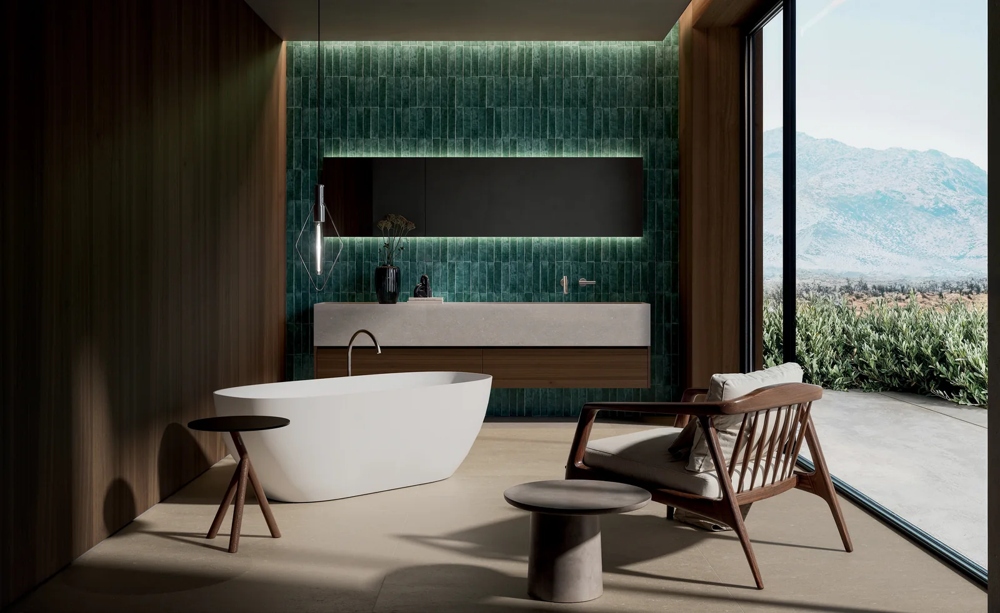

FUGABELLA COLOR
KK 1422
SensiColore Bianco

RENK / YÜZEY İŞ BİRLİKLERİ · 03 / 04
Florim × Kerakoll
Florim ve Kerakoll’un buluşmasından, mekânın ifade olanaklarını genişletmek için seramik yüzey, derz ve duvarı bir araya getiren renge adanmış bir proje doğuyor.
Florim’in resmî sayfasını inceleyinSERİ / TASARIM YAKLAŞIMI
İş birliği, Matteo Thun & Partners imzalı SensiColore koleksiyonu etrafında şekilleniyor. İtalyan manzaralarından ilham alan 15 ton, renkler arasında bir yolculuk sunuyor.
Kerakoll, SensiColore’nin 15 renginin her biri için seramik yüzeylerde kullanılmak üzere dekoratif reçine-çimento esaslı Fugabella Color derz eşleşmesi geliştirdi. Florim için özel olarak hazırlanan tonlar; nötr renklerden mavi, yeşil, kırmızı ve grilere uzanıyor. Yüzeyle ton sür ton uyum sağlayan bu eşleşmelerde derz, yalnızca birleştirici bir detay değil; mekânın bütünlüğüne katkıda bulunan tasarımın bir parçası.

KERAKOLL × FLORIM / RENK EŞLEŞMELERİ
15 SensiColore tonu için Florim ve Kerakoll’un birlikte geliştirdiği Fugabella Color eşleşmeleri.
FUGABELLA COLOR
SensiColore Bianco
FUGABELLA COLOR
SensiColore Grigio
FUGABELLA COLOR
SensiColore Tortora
FUGABELLA COLOR
SensiColore Avorio
FUGABELLA COLOR
SensiColore Rosa
FUGABELLA COLOR
SensiColore Vino
FUGABELLA COLOR
SensiColore Miele
FUGABELLA COLOR
SensiColore Cammello
FUGABELLA COLOR
SensiColore Marrone
FUGABELLA COLOR
SensiColore Salvia
FUGABELLA COLOR
SensiColore Muschio
FUGABELLA COLOR
SensiColore Bosco
FUGABELLA COLOR
SensiColore Ceruleo
FUGABELLA COLOR
SensiColore Laguna
FUGABELLA COLOR
SensiColore Blunotte
FLORIM / GÖRSEL SEÇKİSİ
Florim’in Kerakoll × Florim ve SensiColore sayfalarındaki görseller.
BEKAMAR / FLORIM
Kerakoll × Florim hakkında ürün ve proje bilgisi için Bekamar ekibine ulaşın.
Bekamar ile iletişime geç